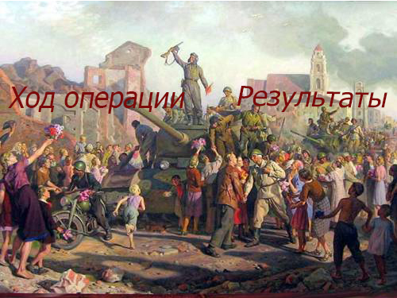

Ми́нская опера́ция — стратегическая военная наступательная операция советской Красной армии против войск нацистской Германии, осуществлённая на территории восточной части Белорусской ССР в период с 29 июня по 4 июля 1944 года во время Великой Отечественной войны. Является составной частью Белорусской операции.
| Назад | На главную | Далее |